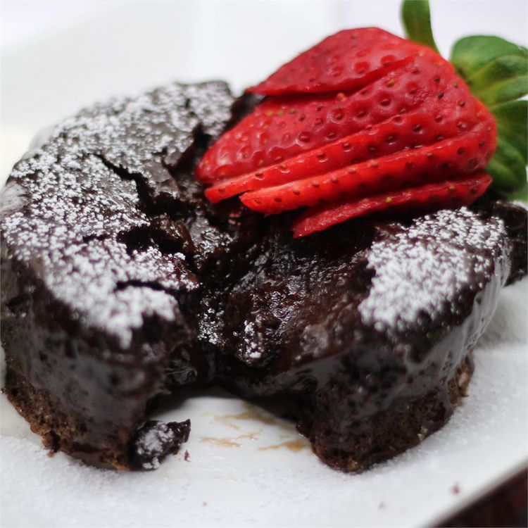

Lava Cake

Delicious lava cake
Legend has it that the first chocolate lava cake was the result of a major catering disaster. The dessert for this particular event was to be individual chocolate cakes, but someone took them out of the oven too soon, and the centers were not cooked enough and still liquefied. There was no time to take them off the plates and bake them more, so the chef simply had his wait staff introduce the dessert as chocolate "lava" cakes — brilliant!
Ingredients
- 2 egg yolks
- 2 eggs
- 3 tablespoons white sugar
- 3 1/2 ounces chopped dark chocolate
- 5 tablespoons butter
- 4 teaspoons unsweetened cocoa powder
- 3 tablespoons flour
- 1 pinch salt
- 1/8 teaspoon vanilla extract
Steps
Generously butter the insides of four 5 1/2-ounce ramekins.
Whisk egg yolks, eggs, and sugar together in a bowl until light, foamy, and lemon colored.
Melt chocolate and butter in a microwave-safe bowl in 30-second intervals until melted, stirring after each interval, 1 to 3 minutes.
Stir melted chocolate mixture into egg and sugar mixture until combined. Sift in cocoa powder and stir to combine. Sift in flour and salt; stir to combine into a batter. Stir in vanilla.
Transfer batter to a resealable plastic bag. Snip off one corner of the bag with scissors to create a tip. Divide batter evenly between the prepared ramekins; gently tap ramekins on the counter to remove any air bubbles. Refrigerate for 30 minutes.
Preheat the oven to 425 degrees F (220 degrees C).
Arrange chilled ramekins in a casserole dish. Pour enough hot tap water into the casserole dish to reach halfway up the sides of the ramekins.
Bake in the preheated oven for 15-18 minutes. Remove from the oven and let cool for 15 minutes.
Loosen the edges from each ramekin with a knife. Invert cakes onto serving plates and dust with powdered sugar.
Enjoy!
See the original recipe here.